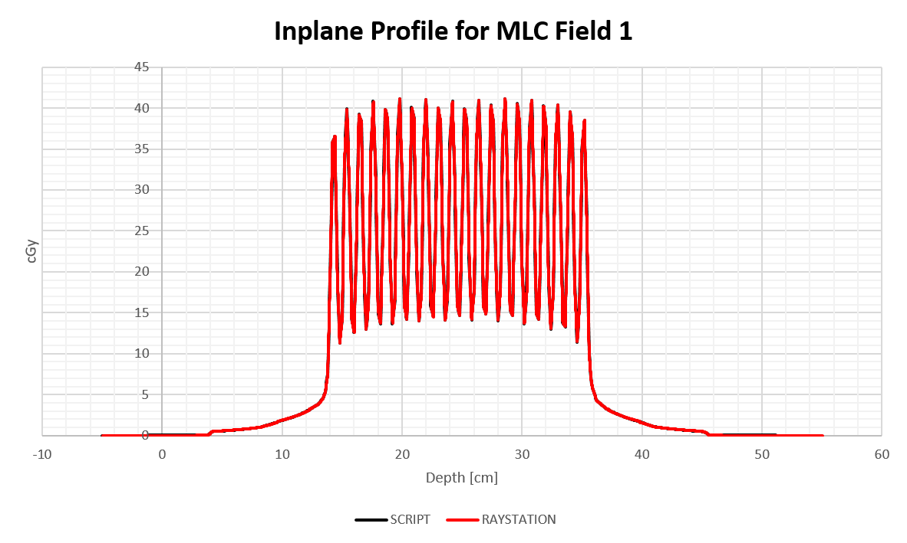

This project contains a set of python modules that expedite the extraction of profiles and PDDs from a RayStation phantom.
The files are exported as a bare bones .mcc file which can opened in PTW programs for further analysis.
The script expects RayStation to be in a certain state. All beams in the current BeamSet will have profiles and PDDs generated according to the following rules.
Copy the phantom_curves.py file into a project root directory. Also copy the PDD.mcc and PROFILE.mcc files.
Create a directory as follows:
Exported profiles and PDDs will wind up in ./mcc/raystation_data_out/.
POIs define the start and end of each phantom curve.
| Curve type | POIs |
|---|---|
| Crossplane Profile | RIGHT -> LEFT |
| Inplane Profile | GUN -> TARGET |
| AXIS | PDD |
POIs will be extracted at all depths indicated with a POI named according to d_Xcm. PDDs will start at AXIS and continue to a depth of 50cm.
Capitalization in POI names is important. All must be defined for the script to work.
No check of RayStation's state is done before executing the script. If these conditions are not met, the script will die silently.
Example Patient: RayTraining 40x40x40 Phantom, Case: LSt WaterTank Phantom, COMMISSIONING.
The current BeamSet should contain only 3D-CRT beams - at the time of writing, SMLC and DMLC beams are unsupported.
Final dose should be calculated.
The Beam Name and Description are used in output .mcc file - HINT - use descriptive names.

This is a work in progress. There are some known, and many unknown limitations:
The code output was validated by comparing a few script extracted profiles with the line dose tool in RayStation. More detail can be found in this spreadsheet.


RayStation does most of the hard work!
There are two convenience classes that facilitate the automatic extraction of high quality phantom curves.
Usage then basically amounts to connecting the two objects together in a for loop though the current BeamSet.
Example Usage
from raystation_curves import RayCurves
from ptw_mcc import PTW_mcc
# -- CONSTANTS --
beam_set = get_current("BeamSet")
PROJECT_ROOT = os.getcwd()
for beam_dose in beam_set.FractionDose.BeamDoses:
rc = RayCurves(
beam_dose
)
for y, d in zip(rc.crossplane_profiles, rc.cax_depths):
crossplane_profile_mcc = PTW_mcc(
rc,
curve_type = "x profile",
depth = d,
energy = rc.energy,
positions =rc.crossplane_positions,
dose = y,
f_root = PROJECT_ROOT
)
crossplane_profile_mcc.write_mcc()
./rs_macros/raystation_curves.py